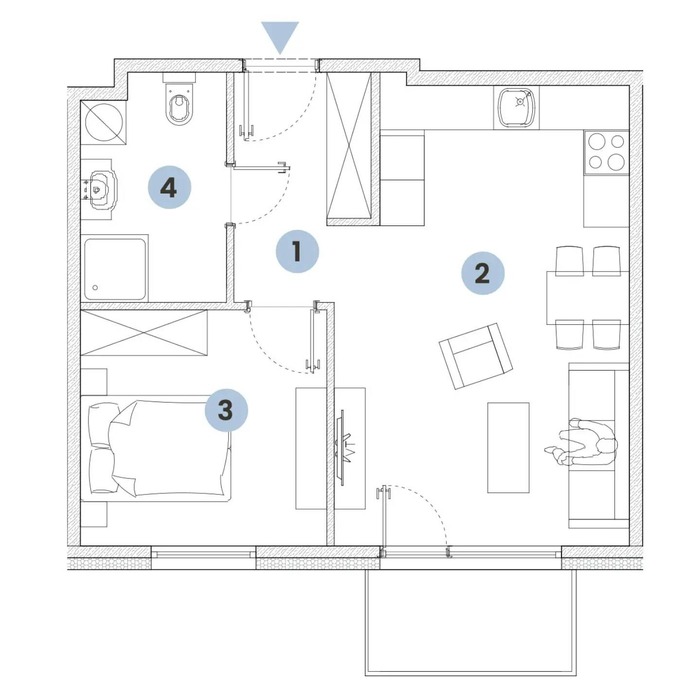
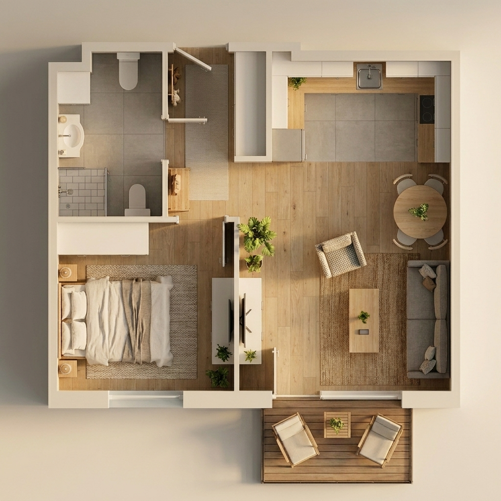
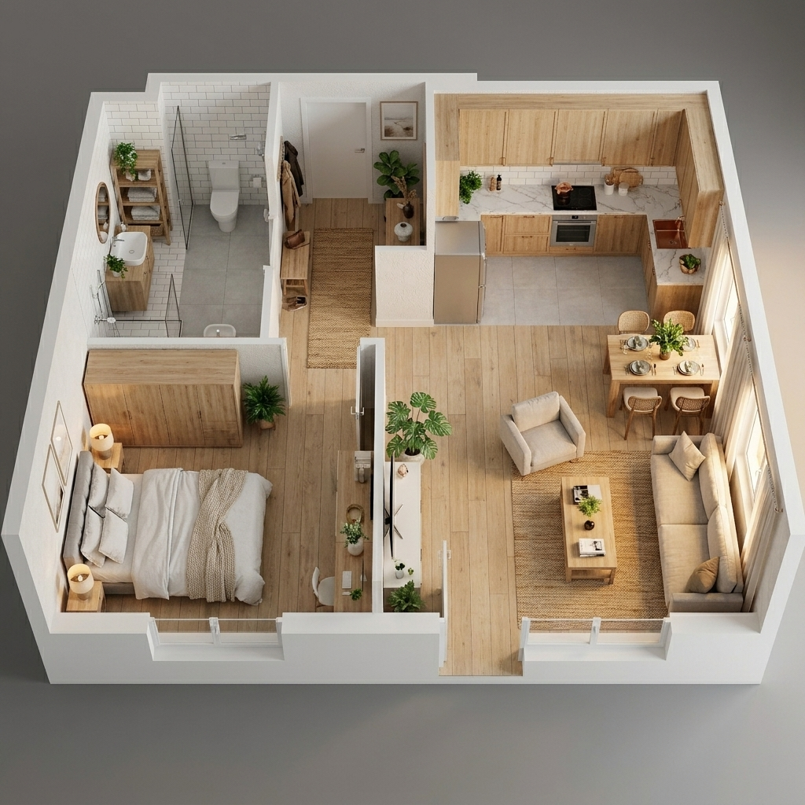

app.adresflow.com/narzedzia/wizualizacja
📐
Rzut 3D z kartki
Szkic → plan 2D → render 3D
2 kr / etap
⬆
Upuść rzut albo odręczny szkic
JPG / PNG · odręczny szkic też zadziała

Styl wnętrza
Nowoczesny
▾
Nowoczesny
Skandynawski
Klasyczny
Generuj etap 1
app.adresflow.com
0
s
○
Etap 1 — kolorowy plan 2D
○
Etap 2 — render 3D top-down
○
Etap 3 — widok izometryczny

Etap 2 — render 3D top-down

Etap 3 — widok izometryczny
Tak robię rzut 3D
w półtorej minuty
Zrób pierwszy za darmo
adresflow.com